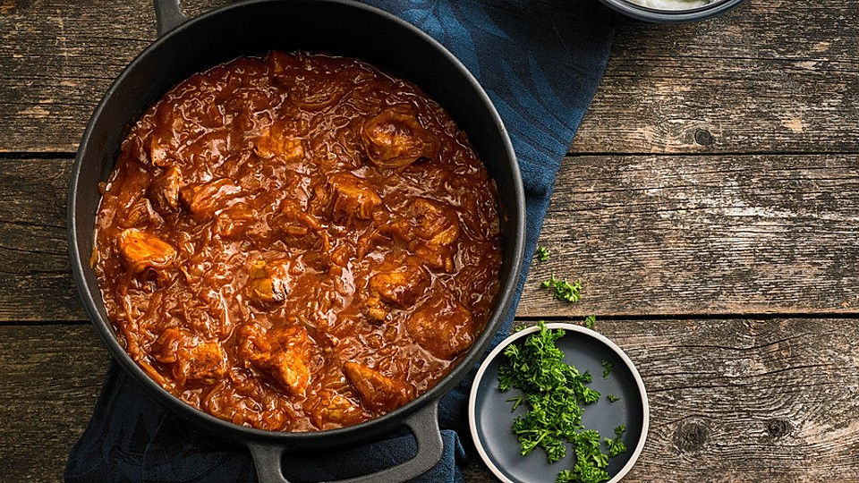

Szegediner Goulash Recipe

A spicy Hungarian tradition
This is an easy recipe for a Hungarian classic
Ingredients:
- 500g pork goulash, lean
- 30g lard or frying oil
- 30g flour
- 300g onions
- 1 tbsp. salt
- half a tbsp. pepper
- 1 tbsp. cumin
- 2 tbsp. paprika powder
- 70g tomato paste
- 2 garlic gloves, pressed
- 200ml broth
- 300g sauerkraut
- sour creme
- yogurt if meat is very lean
Steps
-
Fry the goulash in hot lard until it's nice and brown.
-
Dust with flour, add onions, salt, pepper, caraway, paprika, tomato paste (not tomatoes!) and the pressed garlic
cloves.
(note: the flour makes the frying mixture a bit mushy, don't worry, it will disappear completely and it will be
very creamy, just as the goulash should be)
-
When the flour is light brown, top up with vegetable stock.
-
If the meat is very lean, add another 150 ml of yogurt!
-
Braise well, approx. 20 - 30 minutes.
-
Add the sauerkraut, stir well and braise for another 30 minutes.
-
To serve, add a little sour cream to the goulash.